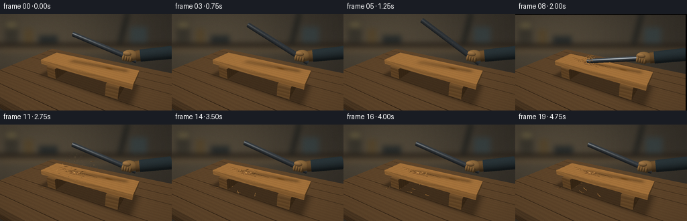
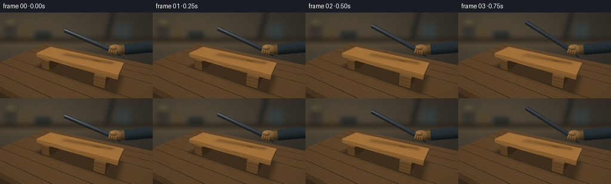

CODING AGENTS AS PIXEL WORLD MODELS
traex/GPT-6.1-Sol · material_0015
点击播放 · 原生 RGB 像素
逐轮保存的候选
回放视频、检查图与代码变化。
每份候选均可单独播放。实际图片检查记录在下方工具轨迹中。
候选 01播放与检查图
点击播放 · 原生 RGB 像素


展开代码变化
--- 上一保存版本
+++ 本次保存版本
@@ -0,0 +1,274 @@
+"""A deterministic, all-procedural workshop shot. No external renderer/assets."""
+from pathlib import Path
+import json, math
+import numpy as np
+from PIL import Image, ImageDraw, ImageFilter
+import artifact_io
+
+ROOT=Path(__file__).resolve().parent
+SPEC=json.loads((ROOT/'task_spec.json').read_text())
+W,H=SPEC['width']*3,SPEC['height']*3
+rng=np.random.default_rng(8416)
+CAM=np.array([3.0,-5.3,3.85]); TARGET=np.array([0.,0.,1.12])
+FWD=TARGET-CAM; FWD/=np.linalg.norm(FWD)
+RIGHT=np.cross(FWD,[0,0,1]); RIGHT/=np.linalg.norm(RIGHT)
+UP=np.cross(RIGHT,FWD); FOCAL=204*3
+LIGHT=np.array([-0.45,-0.55,0.84]); LIGHT/=np.linalg.norm(LIGHT)
+
+def project(p):
+ p=np.asarray(p); v=p-CAM
+ z=v@FWD
+ return np.stack([W/2+FOCAL*(v@RIGHT)/z,H/2-FOCAL*(v@UP)/z,z],axis=-1)
+
+# Out-of-focus workshop background, generated in pixels.
+def background():
+ yy,xx=np.mgrid[:H,:W]; u=xx/W;v=yy/H
+ light=np.exp(-((u-.2)**2/.35+(v-.22)**2/.35))
+ grain=1.8*np.sin(xx*.24+np.sin(yy*.015))+.9*np.sin(xx*.77+yy*.006)
+ a=np.zeros((H,W,3),float)
+ for j,b in enumerate([48,44,38]):a[:,:,j]=b+light*[34,29,20][j]+grain
+ im=Image.fromarray(np.uint8(np.clip(a,0,255)))
+ d=ImageDraw.Draw(im)
+ # warm distant shelving, indistinct hardware and a blue-gray workshop wall
+ d.rectangle([0,43*3,W,49*3],fill=(41,34,26))
+ d.rectangle([7*3,10*3,27*3,43*3],fill=(58,54,45))
+ d.rectangle([9*3,12*3,25*3,20*3],fill=(104,93,65))
+ d.rectangle([36*3,22*3,49*3,43*3],fill=(85,70,45))
+ d.rectangle([58*3,32*3,86*3,43*3],fill=(39,43,42))
+ d.line([(190*3,0),(178*3,44*3)],fill=(29,31,29),width=6*3)
+ d.rectangle([194*3,19*3,219*3,43*3],fill=(55,63,63))
+ d.line([(1,54*3),(W,54*3)],fill=(97,79,55),width=4*3)
+ return np.asarray(im.filter(ImageFilter.GaussianBlur(3.8*3))).copy()
+BG=background()
+
+class Render:
+ def __init__(self):
+ self.rgb=BG.astype(np.float32).copy();self.depth=np.full((H,W),1e8,np.float32)
+ def tri(self,verts,norms,mat='wood',base=None):
+ pts=project(verts)
+ if np.min(pts[:,2])<=.1:return
+ x0=max(0,int(np.floor(pts[:,0].min())));x1=min(W-1,int(np.ceil(pts[:,0].max())))
+ y0=max(0,int(np.floor(pts[:,1].min())));y1=min(H-1,int(np.ceil(pts[:,1].max())))
+ if x1<x0 or y1<y0:return
+ X,Y=np.meshgrid(np.arange(x0,x1+1)+.5,np.arange(y0,y1+1)+.5)
+ a,b,c=pts
+ den=(b[1]-c[1])*(a[0]-c[0])+(c[0]-b[0])*(a[1]-c[1])
+ if abs(den)<1e-9:return
+ l0=((b[1]-c[1])*(X-c[0])+(c[0]-b[0])*(Y-c[1]))/den
+ l1=((c[1]-a[1])*(X-c[0])+(a[0]-c[0])*(Y-c[1]))/den;l2=1-l0-l1
+ mask=(l0>=-1e-6)&(l1>=-1e-6)&(l2>=-1e-6)
+ z=1/(l0/a[2]+l1/b[2]+l2/c[2])
+ old=self.depth[y0:y1+1,x0:x1+1]
+ mask&=(z<old)
+ if not mask.any():return
+ bc=np.stack([l0[mask]/a[2],l1[mask]/b[2],l2[mask]/c[2]],axis=1)*z[mask,None]
+ p=bc@np.asarray(verts); n=bc@np.asarray(norms);n/=np.linalg.norm(n,axis=1)[:,None]
+ col=shade(p,n,mat,base)
+ old[mask]=z[mask];self.rgb[y0:y1+1,x0:x1+1][mask]=col
+ def face(self,verts,mat='wood',base=None):
+ verts=np.array(verts,float);n=np.cross(verts[1]-verts[0],verts[2]-verts[0]);n/=np.linalg.norm(n)
+ for i in range(1,len(verts)-1):self.tri(verts[[0,i,i+1]],np.tile(n,(3,1)),mat,base)
+ def box(self,lo,hi,mat='wood',base=None):
+ a,b,c=lo;d,e,f=hi
+ p=np.array([[a,b,c],[d,b,c],[d,e,c],[a,e,c],[a,b,f],[d,b,f],[d,e,f],[a,e,f]])
+ for ids in [[0,3,2,1],[4,5,6,7],[0,1,5,4],[1,2,6,5],[2,3,7,6],[3,0,4,7]]:self.face(p[ids],mat,base)
+ def cylinder(self,a,b,r,mat='iron',base=None,sides=36):
+ a=np.array(a,float);b=np.array(b,float);axis=b-a;axis/=np.linalg.norm(axis)
+ ref=np.array([0,0,1.]) if abs(axis[2])<.9 else np.array([0,1.,0])
+ u=np.cross(axis,ref);u/=np.linalg.norm(u);v=np.cross(axis,u)
+ angles=np.arange(sides)*2*np.pi/sides
+ ns=np.cos(angles)[:,None]*u+np.sin(angles)[:,None]*v
+ p=a+r*ns;q=b+r*ns
+ for k in range(sides):
+ j=(k+1)%sides
+ self.tri(np.array([p[k],p[j],q[j]]),np.array([ns[k],ns[j],ns[j]]),mat,base)
+ self.tri(np.array([p[k],q[j],q[k]]),np.array([ns[k],ns[j],ns[k]]),mat,base)
+ self.face(p[::-1],mat,base);self.face(q,mat,base)
+ def ellipsoid(self,center,radii,mat='glove',base=None):
+ center=np.asarray(center);rr=np.asarray(radii)
+ lat=np.linspace(-np.pi/2,np.pi/2,11); lon=np.arange(20)*2*np.pi/20
+ pts=[];ns=[]
+ for t in lat:
+ unit=np.stack([np.cos(t)*np.cos(lon),np.cos(t)*np.sin(lon),np.full_like(lon,np.sin(t))],axis=1)
+ pts.append(center+unit*rr);nn=unit/rr;nn/=np.linalg.norm(nn,axis=1)[:,None];ns.append(nn)
+ for i in range(len(lat)-1):
+ for j in range(20):
+ k=(j+1)%20
+ self.tri(np.array([pts[i][j],pts[i][k],pts[i+1][k]]),np.array([ns[i][j],ns[i][k],ns[i+1][k]]),mat,base)
+ self.tri(np.array([pts[i][j],pts[i+1][k],pts[i+1][j]]),np.array([ns[i][j],ns[i+1][k],ns[i+1][j]]),mat,base)
+
+IMPACT=0.
+TIP=np.array([0,0,1.])
+GRIP=np.array([1.7,.3,1.6])
+def shade(p,n,mat,base):
+ x,y,z=p.T
+ nd=np.maximum(0,n@LIGHT)
+ noise=(np.sin(x*111+y*207+z*91)+np.sin(x*263-y*73+z*141))*.5
+ if mat in ('wood','bench','end','chip'):
+ gr=y*155+np.sin(x*1.4+y*7)*2.8+np.sin(x*3.5+y*18)*.6+z*37
+ streak=np.sin(gr)+.42*np.sin(gr*2.03)+.25*np.sin(gr*5.17)
+ streak+=.5*np.sin(y*35+np.sin(x*.9)*1.8)
+ # soft whorled knot grain and streaks around it
+ knot=np.sqrt(((x-1.14)*.46)**2+((y-.17)*3)**2)
+ rings=np.sin(knot*74+np.sin(x*9)*.35)*np.exp(-knot*3.6)
+ if mat=='end':streak=np.sin(np.sqrt((y+.2)**2+(z-.65)**2)*110)*1.7
+ col=np.tile(np.array(base if base else ([103,75,46] if mat=='bench' else [177,123,64]),float),(len(p),1))
+ variation=streak*8+rings*13+noise*2
+ if mat=='bench':variation*=.62
+ col+=variation[:,None]*np.array([1,.82,.52])
+ if mat=='wood':
+ knotdark=np.exp(-(((x-1.14)/.19)**2+((y-.17)/.06)**2))*40
+ col-=knotdark[:,None]
+ # projected rod shadow, softened penumbra, surface contact darkening
+ v=TIP[:2]-GRIP[:2];t=np.clip(((p[:,:2]-GRIP[:2])@v)/(v@v),0,1)
+ nearest=GRIP[:2]+t[:,None]*v
+ d=np.linalg.norm(p[:,:2]-nearest,axis=1)
+ elev=GRIP[2]+t*(TIP[2]-GRIP[2])-z
+ shadow=np.exp(-(d/(.12+.08*np.maximum(elev,0)))**2)*np.clip(1-elev*.25,.22,.72)
+ col*=1-.35*shadow[:,None]
+ if mat=='bench':
+ # ambient/contact shadow underneath board and timber supports
+ oc=np.exp(-((np.maximum(abs(x)-2.3,0)/.23)**2+(np.maximum(abs(y)-.67,0)/.19)**2))
+ col*=1-.32*oc[:,None]
+ result=col*(.43+.65*nd[:,None])
+ elif mat=='iron':
+ view=CAM-p;view/=np.linalg.norm(view,axis=1)[:,None]
+ half=view+LIGHT;half/=np.linalg.norm(half,axis=1)[:,None]
+ spec=np.maximum(0,np.sum(n*half,axis=1))**38
+ fres=(1-np.maximum(0,np.sum(n*view,axis=1)))**3
+ scratches=np.sin(x*12+y*73+z*310)*1.8+noise*2
+ col=np.array([48.,53.,57.])[None,:]+scratches[:,None]
+ result=col*(.40+.95*nd[:,None])+spec[:,None]*np.array([139,141,140])+fres[:,None]*np.array([20,24,26])
+ # patinated iron with subtle reddish oxidation instead of shiny chrome
+ rust=np.maximum(0,np.sin(x*19+y*27)*np.sin(z*47-x*11)-.62)
+ result+=rust[:,None]*np.array([26,9,0])
+ elif mat in ('glove','sleeve'):
+ col=np.array(base if base else ([135,99,56] if mat=='glove' else [41,52,56]),float)
+ weave=np.sin(x*220+y*70)*np.sin(z*190+y*150)*2.2+noise
+ result=(col+weave[:,None])*(.46+.60*nd[:,None])
+ else:
+ result=np.tile(np.array(base if base else [42,27,14],float),(len(p),1))*(.65+.3*nd[:,None])
+ return np.clip(result,0,255)
+
+# Hand-carved jagged fracture lines following the wooden fibres.
+cracks=[]
+for sign in [-1,1]:
+ for k in range(3):
+ yy=-.09+k*.11
+ xs=np.linspace(-.63,-.63+sign*(.65+.3*k),15)
+ ys=yy+np.cumsum(rng.normal(0,.018,len(xs)))
+ cracks.append(np.stack([xs,ys],axis=1))
+chips=[]
+for k in range(34):
+ chips.append(dict(v=np.array([rng.uniform(-1.6,1.0),rng.uniform(-1.5,1.7),rng.uniform(1.8,3.9)]),
+ pos=np.array([rng.uniform(-.78,-.40),rng.uniform(-.18,.18),1.015]),
+ size=rng.uniform(.022,.075), spin=rng.uniform(0,6), axis=rng.normal(size=3)))
+
+
+def render_frame(i):
+ global TIP,GRIP,IMPACT
+ t=i/4
+ # Hold, wind-up, an accelerating downstroke, then elastic recoil and recovery.
+ angles=[.28,.32,.38,.46,.52,.55,.49,.29,-.235,.00,.20,.28,.31,.32,.315,.31,.30,.295,.29,.285]
+ ang=angles[i]
+ grip=np.array([1.82+.035*np.sin(t*1.4),.32,1.67])
+ if i==8:grip[2]-=.055
+ if i==9:grip[2]+=.035
+ axis=np.array([-np.cos(ang),-.095,np.sin(ang)]);axis/=np.linalg.norm(axis)
+ tip=grip+axis*2.67
+ # Lower cap just meets the board on the impact frame.
+ if i==8:tip[2]=1.034;axis=tip-grip;axis/=np.linalg.norm(axis)
+ TIP=tip;GRIP=grip;IMPACT=float(i>=8)
+ r=Render()
+ # A broad, old workbench with individual seams and a hefty front apron.
+ r.box([-5,-3,-.32],[5,3,.12],'bench')
+ for yy in [-2.4,-1.55,-.76,.78,1.59,2.39]:
+ r.box([-5,yy,-.04],[5,yy+.018,.123],'dark',[42,29,17])
+ r.box([-5,-2.98,-.7],[5,-2.82,-.05],'bench',[79,56,33])
+ # Blocks underneath make the board read as a separate object, not a floor.
+ for xx in [-1.68,1.63]:
+ r.box([xx-.28,-.71,.125],[xx+.28,.71,.70],'wood',[125,88,48])
+ # thick honey-coloured plank, its endgrain and freshly cut bevels visible
+ bounce=-.028 if i==8 else (.012 if i==9 else 0)
+ top=.985+bounce
+ r.box([-2.40,-.64,.75+bounce],[2.40,.64,top],'wood')
+ r.face([[-2.401,-.64,.75+bounce],[-2.401,-.64,top],[-2.401,.64,top],[-2.401,.64,.75+bounce]],'end',[156,105,53])
+ r.face([[2.401,-.64,.75+bounce],[2.401,.64,.75+bounce],[2.401,.64,top],[2.401,-.64,top]],'end',[182,128,68])
+ # narrow chipped bevel along the front edge and scattered old scratches
+ r.face([[-2.4,-.641,top-.025],[2.4,-.641,top-.025],[2.4,-.62,top+.0003],[-2.4,-.62,top+.0003]],'wood',[191,137,73])
+ if i>=8:
+ # splintered contact patch, black centre, pale torn fibres around it
+ for k in range(22):
+ rr=np.random.default_rng(912+k)
+ cx=-.64+rr.uniform(-.16,.17);cy=rr.uniform(-.19,.14)
+ length=rr.uniform(.035,.17);width=rr.uniform(.007,.027)
+ r.face([[cx-length,cy-width,top+.002],[cx+length,cy-width*.5,top+.003],[cx+length*.8,cy+width,top+.003],[cx-length*.9,cy+width*.5,top+.002]],'dark',[84+int(rr.uniform(0,28)),51,23])
+ r.face([[cx-length,cy+width,top+.004],[cx+length,cy+width,top+.004],[cx+length*.3,cy+width*1.7,top+.025]],'chip',[204,150,83])
+ for path in cracks:
+ for a,b in zip(path[:-1],path[1:]):
+ width=.006
+ r.face([[a[0],a[1]-width,top+.006],[b[0],b[1]-width,top+.006],[b[0],b[1]+width,top+.006],[a[0],a[1]+width,top+.006]],'dark',[52,32,15])
+ # The massive solid rod: cylindrical silhouette, dark scale, rounded lighting.
+ r.cylinder(tip,grip-axis*.22,.115,'iron',sides=44)
+ # End near the operator protrudes beyond the gloved fist.
+ r.cylinder(grip-axis*.11,grip-axis*.45,.115,'iron',sides=36)
+ # Partial forearm exits the right edge; a leather glove is wrapped around the bar.
+ wrist=grip+np.array([.53,.13,.10])
+ r.cylinder(wrist,grip+np.array([1.6,.33,.37]),.255,'sleeve',sides=28)
+ r.cylinder(grip+np.array([.36,.08,.06]),wrist,.23,'glove',[111,81,46],sides=28)
+ r.ellipsoid(grip+np.array([.16,.02,.07]),[.36,.235,.235],'glove',[144,107,61])
+ # Curled fingers over the cylinder: four clearly articulated leather lobes.
+ for k in range(4):
+ cc=grip+np.array([-.075+k*.102,-.12,-.022])
+ r.ellipsoid(cc,[.074,.145,.145],'glove',[142-k*4,104-k*3,59-k*2])
+ r.cylinder(cc+np.array([-.05,-.10,.01]),cc+np.array([.05,-.10,.01]),.013,'glove',[76,57,35],sides=10)
+ r.ellipsoid(grip+np.array([.055,-.17,.19]),[.17,.087,.098],'glove',[161,119,70])
+ # Splinters fly on ballistic paths after the single heavy impact.
+ if i>=8:
+ elapsed=(i-8)/4
+ for k,c in enumerate(chips):
+ # The sampled impact contains the initial spray rather than an empty instant.
+ dt=elapsed+.08
+ p=c['pos']+c['v']*dt+np.array([0,0,-4.3*dt*dt])
+ floor=.135
+ if abs(p[0])<2.4 and abs(p[1])<.64:floor=top+.01
+ if p[2]<floor:
+ land=(c['v'][2]+np.sqrt(c['v'][2]**2+17.2*(c['pos'][2]-floor)))/8.6
+ p=c['pos']+c['v']*min(dt,land)+np.array([0,0,-4.3*min(dt,land)**2]);p[2]=floor
+ s=c['size'];theta=c['spin']+dt*8
+ u=np.array([np.cos(theta),np.sin(theta),.22*np.sin(theta*1.4)])*s*2.4
+ v=np.array([-np.sin(theta),np.cos(theta),.2])*s*.26
+ r.face([p-u-v,p+u*.85-v*.3,p+u+v,p-u*.75+v],'chip',[195,140,76])
+ r.face([p-u-v,p+u*.85-v*.3,p+[0,0,s*.45]],'chip',[146,98,45])
+ im=Image.fromarray(np.uint8(np.clip(r.rgb,0,255)))
+ # A translucent amber sawdust plume; small motes, not smoke or a cartoon flash.
+ if 8<=i<=13:
+ dt=(i-8)/4+.06
+ layer=Image.new('RGBA',(W,H));d=ImageDraw.Draw(layer)
+ for k in range(70):
+ rr=np.random.default_rng(4560+k)
+ v=np.array([rr.uniform(-.7,.7),rr.uniform(-.5,.8),rr.uniform(.4,1.35)])
+ p=np.array([-.61,0,top+.03])+v*dt+np.array([0,0,-.23*dt*dt])
+ pix=project(p);rad=(rr.uniform(.004,.024)+dt*.020)*FOCAL/pix[2]
+ alpha=int((27 if k<45 else 83)*np.exp(-dt*1.2))
+ d.ellipse([pix[0]-rad,pix[1]-rad,pix[0]+rad,pix[1]+rad],fill=(188,149,100,alpha))
+ layer=layer.filter(ImageFilter.GaussianBlur(.55*3))
+ im=Image.alpha_composite(im.convert('RGBA'),layer).convert('RGB')
+ # Very short whole-camera shudder at contact, not an unrelated scene change.
+ if i in [8,9]:
+ offset=(2,-1) if i==8 else (-1,1)
+ im=im.transform(im.size,Image.Transform.AFFINE,(1,0,offset[0]*3,0,1,offset[1]*3),resample=Image.Resampling.BICUBIC)
+ im=im.resize((SPEC['width'],SPEC['height']),Image.Resampling.LANCZOS)
+ a=np.asarray(im).astype(float)
+ yy,xx=np.mgrid[:SPEC['height'],:SPEC['width']]
+ vig=1-.12*((xx-SPEC['width']*.5)**2/(SPEC['width']*.7)**2+(yy-SPEC['height']*.52)**2/(SPEC['height']*.8)**2)
+ a*=vig[:,:,None]
+ grain=np.random.default_rng(920+i).normal(0,.48,a.shape[:2]);a+=grain[:,:,None]
+ return np.uint8(np.clip(a,0,255))
+
+if __name__=='__main__':
+ frames=[]
+ for i in range(SPEC['frames']):
+ frames.append(render_frame(i));print(f'rendered {i+1}/{SPEC["frames"]}',flush=True)
+ artifact_io.save(np.stack(frames),ROOT)
+ print('Saved RGB video and player.',flush=True)
可观测工具轨迹
实际执行的命令与返回图片。
命令 1exit 0
/bin/bash -lc 'ls -la && cat prompt.txt && cat GENERATION_RULES.md && cat task_spec.json'
命令 2exit 0
/bin/bash -lc 'cat artifact_io.py'
命令 3exit 0
/bin/bash -lc "python - <<'PY' import numpy as np cam=np.array([3.7,-6.7,4.8]); target=np.array([0,0,.85]); fw=(target-cam);fw/=np.linalg.norm(fw); rt=np.cross(fw,[0,0,1]);rt/=np.linalg.norm(rt);up=np.cross(rt,fw);f=144/(2*np.tan(np.deg2rad(43)/2)) for p in [[-1.9,-.7,.3],[1.9,-.7,.3],[1.9,.7,.3],[-1.9,.7,.3],[1.85,.45,2.6],[-.9,.2,2.95],[0,.1,.3]]: v=np.array(p)-cam; z=v@fw; print(p,[128+f*(v@rt)/z,72-f*(v@up)/z]) PY"
命令 4exit 0
/bin/bash -lc "python - <<'PY' import numpy as np cam=np.array([3.,-5,3.6]);fw=np.array([0,0,.9])-cam;fw/=np.linalg.norm(fw);rt=np.cross(fw,[0,0,1]);rt/=np.linalg.norm(rt);up=np.cross(rt,fw);f=210 for p in [[-2.5,-.8,.55],[2.5,-.8,.55],[2.5,.8,.55],[-2.5,.8,.55],[1.7,.4,2.35],[-1.3,.4,2.75],[0,.1,.55]]: v=np.array(p)-cam;print(p,[128+f*(v@rt)/(v@fw),72-f*(v@up)/(v@fw)]) PY"
命令 5exit 0
/bin/bash -lc "cat > generate.py <<'PY'
\"\"\"A deterministic, all-procedural workshop shot. No external renderer/assets.\"\"\"
from pathlib import Path
import json, math
import numpy as np
from PIL import Image, ImageDraw, ImageFilter
import artifact_io
ROOT=Path(__file__).resolve().parent
SPEC=json.loads((ROOT/'task_spec.json').read_text())
W,H=SPEC['width']*3,SPEC['height']*3
rng=np.random.default_rng(8416)
CAM=np.array([3.0,-5.3,3.85]); TARGET=np.array([0.,0.,1.12])
FWD=TARGET-CAM; FWD/=np.linalg.norm(FWD)
RIGHT=np.cross(FWD,[0,0,1]); RIGHT/=np.linalg.norm(RIGHT)
UP=np.cross(RIGHT,FWD); FOCAL=204*3
LIGHT=np.array([-0.45,-0.55,0.84]); LIGHT/=np.linalg.norm(LIGHT)
def project(p):
p=np.asarray(p); v=p-CAM
z=v@FWD
return np.stack([W/2+FOCAL*(v@RIGHT)/z,H/2-FOCAL*(v@UP)/z,z],axis=-1)
# Out-of-focus workshop background, generated in pixels.
def background():
yy,xx=np.mgrid[:H,:W]; u=xx/W;v=yy/H
light=np.exp(-((u-.2)**2/.35+(v-.22)**2/.35))
grain=1.8*np.sin(xx*.24+np.sin(yy*.015))+.9*np.sin(xx*.77+yy*.006)
a=np.zeros((H,W,3),float)
for j,b in enumerate([48,44,38]):a[:,:,j]=b+light*[34,29,20][j]+grain
im=Image.fromarray(np.uint8(np.clip(a,0,255)))
d=ImageDraw.Draw(im)
# warm distant shelving, indistinct hardware and a blue-gray workshop wall
d.rectangle([0,43*3,W,49*3],fill=(41,34,26))
d.rectangle([7*3,10*3,27*3,43*3],fill=(58,54,45))
d.rectangle([9*3,12*3,25*3,20*3],fill=(104,93,65))
d.rectangle([36*3,22*3,49*3,43*3],fill=(85,70,45))
d.rectangle([58*3,32*3,86*3,43*3],fill=(39,43,42))
d.line([(190*3,0),(178*3,44*3)],fill=(29,31,29),width=6*3)
d.rectangle([194*3,19*3,219*3,43*3],fill=(55,63,63))
d.line([(1,54*3),(W,54*3)],fill=(97,79,55),width=4*3)
return np.asarray(im.filter(ImageFilter.GaussianBlur(3.8*3))).copy()
BG=background()
class Render:
def __init__(self):
self.rgb=BG.astype(np.float32).copy();self.depth=np.full((H,W),1e8,np.float32)
def tri(self,verts,norms,mat='wood',base=None):
pts=project(verts)
if np.min(pts[:,2])<=.1:return
x0=max(0,int(np.floor(pts[:,0].min())));x1=min(W-1,int(np.ceil(pts[:,0].max())))
y0=max(0,int(np.floor(pts[:,1].min())));y1=min(H-1,int(np.ceil(pts[:,1].max())))
if x1<x0 or y1<y0:return
X,Y=np.meshgrid(np.arange(x0,x1+1)+.5,np.arange(y0,y1+1)+.5)
a,b,c=pts
den=(b[1]-c[1])*(a[0]-c[0])+(c[0]-b[0])*(a[1]-c[1])
if abs(den)<1e-9:return
l0=((b[1]-c[1])*(X-c[0])+(c[0]-b[0])*(Y-c[1]))/den
l1=((c[1]-a[1])*(X-c[0])+(a[0]-c[0])*(Y-c[1]))/den;l2=1-l0-l1
mask=(l0>=-1e-6)&(l1>=-1e-6)&(l2>=-1e-6)
z=1/(l0/a[2]+l1/b[2]+l2/c[2])
old=self.depth[y0:y1+1,x0:x1+1]
mask&=(z<old)
if not mask.any():return
bc=np.stack([l0[mask]/a[2],l1[mask]/b[2],l2[mask]/c[2]],axis=1)*z[mask,None]
p=bc@np.asarray(verts); n=bc@np.asarray(norms);n/=np.linalg.norm(n,axis=1)[:,None]
col=shade(p,n,mat,base)
old[mask]=z[mask];self.rgb[y0:y1+1,x0:x1+1][mask]=col
def face(self,verts,mat='wood',base=None):
verts=np.array(verts,float);n=np.cross(verts[1]-verts[0],verts[2]-verts[0]);n/=np.linalg.norm(n)
for i in range(1,len(verts)-1):self.tri(verts[[0,i,i+1]],np.tile(n,(3,1)),mat,base)
def box(self,lo,hi,mat='wood',base=None):
a,b,c=lo;d,e,f=hi
p=np.array([[a,b,c],[d,b,c],[d,e,c],[a,e,c],[a,b,f],[d,b,f],[d,e,f],[a,e,f]])
for ids in [[0,3,2,1],[4,5,6,7],[0,1,5,4],[1,2,6,5],[2,3,7,6],[3,0,4,7]]:self.face(p[ids],mat,base)
def cylinder(self,a,b,r,mat='iron',base=None,sides=36):
a=np.array(a,float);b=np.array(b,float);axis=b-a;axis/=np.linalg.norm(axis)
ref=np.array([0,0,1.]) if abs(axis[2])<.9 else np.array([0,1.,0])
u=np.cross(axis,ref);u/=np.linalg.norm(u);v=np.cross(axis,u)
angles=np.arange(sides)*2*np.pi/sides
ns=np.cos(angles)[:,None]*u+np.sin(angles)[:,None]*v
p=a+r*ns;q=b+r*ns
for k in range(sides):
j=(k+1)%sides
self.tri(np.array([p[k],p[j],q[j]]),np.array([ns[k],ns[j],ns[j]]),mat,base)
self.tri(np.array([p[k],q[j],q[k]]),np.array([ns[k],ns[j],ns[k]]),mat,base)
self.face(p[::-1],mat,base);self.face(q,mat,base)
def ellipsoid(self,center,radii,mat='glove',base=None):
center=np.asarray(center);rr=np.asarray(radii)
lat=np.linspace(-np.pi/2,np.pi/2,11); lon=np.arange(20)*2*np.pi/20
pts=[];ns=[]
for t in lat:
unit=np.stack([np.cos(t)*np.cos(lon),np.cos(t)*np.sin(lon),np.full_like(lon,np.sin(t))],axis=1)
pts.append(center+unit*rr);nn=unit/rr;nn/=np.linalg.norm(nn,axis=1)[:,None];ns.append(nn)
for i in range(len(lat)-1):
for j in range(20):
k=(j+1)%20
self.tri(np.array([pts[i][j],pts[i][k],pts[i+1][k]]),np.array([ns[i][j],ns[i][k],ns[i+1][k]]),mat,base)
self.tri(np.array([pts[i][j],pts[i+1][k],pts[i+1][j]]),np.array([ns[i][j],ns[i+1][k],ns[i+1][j]]),mat,base)
IMPACT=0.
TIP=np.array([0,0,1.])
GRIP=np.array([1.7,.3,1.6])
def shade(p,n,mat,base):
x,y,z=p.T
nd=np.maximum(0,n@LIGHT)
noise=(np.sin(x*111+y*207+z*91)+np.sin(x*263-y*73+z*141))*.5
if mat in ('wood','bench','end','chip'):
gr=y*155+np.sin(x*1.4+y*7)*2.8+np.sin(x*3.5+y*18)*.6+z*37
streak=np.sin(gr)+.42*np.sin(gr*2.03)+.25*np.sin(gr*5.17)
streak+=.5*np.sin(y*35+np.sin(x*.9)*1.8)
# soft whorled knot grain and streaks around it
knot=np.sqrt(((x-1.14)*.46)**2+((y-.17)*3)**2)
rings=np.sin(knot*74+np.sin(x*9)*.35)*np.exp(-knot*3.6)
if mat=='end':streak=np.sin(np.sqrt((y+.2)**2+(z-.65)**2)*110)*1.7
col=np.tile(np.array(base if base else ([103,75,46] if mat=='bench' else [177,123,64]),float),(len(p),1))
variation=streak*8+rings*13+noise*2
if mat=='bench':variation*=.62
col+=variation[:,None]*np.array([1,.82,.52])
if mat=='wood':
knotdark=np.exp(-(((x-1.14)/.19)**2+((y-.17)/.06)**2))*40
col-=knotdark[:,None]
# projected rod shadow, softened penumbra, surface contact darkening
v=TIP[:2]-GRIP[:2];t=np.clip(((p[:,:2]-GRIP[:2])@v)/(v@v),0,1)
nearest=GRIP[:2]+t[:,None]*v
d=np.linalg.norm(p[:,:2]-nearest,axis=1)
elev=GRIP[2]+t*(TIP[2]-GRIP[2])-z
shadow=np.exp(-(d/(.12+.08*np.maximum(elev,0)))**2)*np.clip(1-elev*.25,.22,.72)
col*=1-.35*shadow[:,None]
if mat=='bench':
# ambient/contact shadow underneath board and timber supports
oc=np.exp(-((np.maximum(abs(x)-2.3,0)/.23)**2+(np.maximum(abs(y)-.67,0)/.19)**2))
col*=1-.32*oc[:,None]
result=col*(.43+.65*nd[:,None])
elif mat=='iron':
view=CAM-p;view/=np.linalg.norm(view,axis=1)[:,None]
half=view+LIGHT;half/=np.linalg.norm(half,axis=1)[:,None]
spec=np.maximum(0,np.sum(n*half,axis=1))**38
fres=(1-np.maximum(0,np.sum(n*view,axis=1)))**3
scratches=np.sin(x*12+y*73+z*310)*1.8+noise*2
col=np.array([48.,53.,57.])[None,:]+scratches[:,None]
result=col*(.40+.95*nd[:,None])+spec[:,None]*np.array([139,141,140])+fres[:,None]*np.array([20,24,26])
# patinated iron with subtle reddish oxidation instead of shiny chrome
rust=np.maximum(0,np.sin(x*19+y*27)*np.sin(z*47-x*11)-.62)
result+=rust[:,None]*np.array([26,9,0])
elif mat in ('glove','sleeve'):
col=np.array(base if base else ([135,99,56] if mat=='glove' else [41,52,56]),float)
weave=np.sin(x*220+y*70)*np.sin(z*190+y*150)*2.2+noise
result=(col+weave[:,None])*(.46+.60*nd[:,None])
else:
result=np.tile(np.array(base if base else [42,27,14],float),(len(p),1))*(.65+.3*nd[:,None])
return np.clip(result,0,255)
# Hand-carved jagged fracture lines following the wooden fibres.
cracks=[]
for sign in [-1,1]:
for k in range(3):
yy=-.09+k*.11
xs=np.linspace(-.63,-.63+sign*(.65+.3*k),15)
ys=yy+np.cumsum(rng.normal(0,.018,len(xs)))
cracks.append(np.stack([xs,ys],axis=1))
chips=[]
for k in range(34):
chips.append(dict(v=np.array([rng.uniform(-1.6,1.0),rng.uniform(-1.5,1.7),rng.uniform(1.8,3.9)]),
pos=np.array([rng.uniform(-.78,-.40),rng.uniform(-.18,.18),1.015]),
size=rng.uniform(.022,.075), spin=rng.uniform(0,6), axis=rng.normal(size=3)))
def render_frame(i):
global TIP,GRIP,IMPACT
t=i/4
# Hold, wind-up, an accelerating downstroke, then elastic recoil and recovery.
angles=[.28,.32,.38,.46,.52,.55,.49,.29,-.235,.00,.20,.28,.31,.32,.315,.31,.30,.295,.29,.285]
ang=angles[i]
grip=np.array([1.82+.035*np.sin(t*1.4),.32,1.67])
if i==8:grip[2]-=.055
if i==9:grip[2]+=.035
axis=np.array([-np.cos(ang),-.095,np.sin(ang)]);axis/=np.linalg.norm(axis)
tip=grip+axis*2.67
# Lower cap just meets the board on the impact frame.
if i==8:tip[2]=1.034;axis=tip-grip;axis/=np.linalg.norm(axis)
TIP=tip;GRIP=grip;IMPACT=float(i>=8)
r=Render()
# A broad, old workbench with individual seams and a hefty front apron.
r.box([-5,-3,-.32],[5,3,.12],'bench')
for yy in [-2.4,-1.55,-.76,.78,1.59,2.39]:
r.box([-5,yy,-.04],[5,yy+.018,.123],'dark',[42,29,17])
r.box([-5,-2.98,-.7],[5,-2.82,-.05],'bench',[79,56,33])
# Blocks underneath make the board read as a separate object, not a floor.
for xx in [-1.68,1.63]:
r.box([xx-.28,-.71,.125],[xx+.28,.71,.70],'wood',[125,88,48])
# thick honey-coloured plank, its endgrain and freshly cut bevels visible
bounce=-.028 if i==8 else (.012 if i==9 else 0)
top=.985+bounce
r.box([-2.40,-.64,.75+bounce],[2.40,.64,top],'wood')
r.face([[-2.401,-.64,.75+bounce],[-2.401,-.64,top],[-2.401,.64,top],[-2.401,.64,.75+bounce]],'end',[156,105,53])
r.face([[2.401,-.64,.75+bounce],[2.401,.64,.75+bounce],[2.401,.64,top],[2.401,-.64,top]],'end',[182,128,68])
# narrow chipped bevel along the front edge and scattered old scratches
r.face([[-2.4,-.641,top-.025],[2.4,-.641,top-.025],[2.4,-.62,top+.0003],[-2.4,-.62,top+.0003]],'wood',[191,137,73])
if i>=8:
# splintered contact patch, black centre, pale torn fibres around it
for k in range(22):
rr=np.random.default_rng(912+k)
cx=-.64+rr.uniform(-.16,.17);cy=rr.uniform(-.19,.14)
length=rr.uniform(.035,.17);width=rr.uniform(.007,.027)
r.face([[cx-length,cy-width,top+.002],[cx+length,cy-width*.5,top+.003],[cx+length*.8,cy+width,top+.003],[cx-length*.9,cy+width*.5,top+.002]],'dark',[84+int(rr.uniform(0,28)),51,23])
r.face([[cx-length,cy+width,top+.004],[cx+length,cy+width,top+.004],[cx+length*.3,cy+width*1.7,top+.025]],'chip',[204,150,83])
for path in cracks:
for a,b in zip(path[:-1],path[1:]):
width=.006
r.face([[a[0],a[1]-width,top+.006],[b[0],b[1]-width,top+.006],[b[0],b[1]+width,top+.006],[a[0],a[1]+width,top+.006]],'dark',[52,32,15])
# The massive solid rod: cylindrical silhouette, dark scale, rounded lighting.
r.cylinder(tip,grip-axis*.22,.115,'iron',sides=44)
# End near the operator protrudes beyond the gloved fist.
r.cylinder(grip-axis*.11,grip-axis*.45,.115,'iron',sides=36)
# Partial forearm exits the right edge; a leather glove is wrapped around the bar.
wrist=grip+np.array([.53,.13,.10])
r.cylinder(wrist,grip+np.array([1.6,.33,.37]),.255,'sleeve',sides=28)
r.cylinder(grip+np.array([.36,.08,.06]),wrist,.23,'glove',[111,81,46],sides=28)
r.ellipsoid(grip+np.array([.16,.02,.07]),[.36,.235,.235],'glove',[144,107,61])
# Curled fingers over the cylinder: four clearly articulated leather lobes.
for k in range(4):
cc=grip+np.array([-.075+k*.102,-.12,-.022])
r.ellipsoid(cc,[.074,.145,.145],'glove',[142-k*4,104-k*3,59-k*2])
r.cylinder(cc+np.array([-.05,-.10,.01]),cc+np.array([.05,-.10,.01]),.013,'glove',[76,57,35],sides=10)
r.ellipsoid(grip+np.array([.055,-.17,.19]),[.17,.087,.098],'glove',[161,119,70])
# Splinters fly on ballistic paths after the single heavy impact.
if i>=8:
elapsed=(i-8)/4
for k,c in enumerate(chips):
# The sampled impact contains the initial spray rather than an empty instant.
dt=elapsed+.08
p=c['pos']+c['v']*dt+np.array([0,0,-4.3*dt*dt])
floor=.135
if abs(p[0])<2.4 and abs(p[1])<.64:floor=top+.01
if p[2]<floor:
land=(c['v'][2]+np.sqrt(c['v'][2]**2+17.2*(c['pos'][2]-floor)))/8.6
p=c['pos']+c['v']*min(dt,land)+np.array([0,0,-4.3*min(dt,land)**2]);p[2]=floor
s=c['size'];theta=c['spin']+dt*8
u=np.array([np.cos(theta),np.sin(theta),.22*np.sin(theta*1.4)])*s*2.4
v=np.array([-np.sin(theta),np.cos(theta),.2])*s*.26
r.face([p-u-v,p+u*.85-v*.3,p+u+v,p-u*.75+v],'chip',[195,140,76])
r.face([p-u-v,p+u*.85-v*.3,p+[0,0,s*.45]],'chip',[146,98,45])
im=Image.fromarray(np.uint8(np.clip(r.rgb,0,255)))
# A translucent amber sawdust plume; small motes, not smoke or a cartoon flash.
if 8<=i<=13:
dt=(i-8)/4+.06
layer=Image.new('RGBA',(W,H));d=ImageDraw.Draw(layer)
for k in range(70):
rr=np.random.default_rng(4560+k)
v=np.array([rr.uniform(-.7,.7),rr.uniform(-.5,.8),rr.uniform(.4,1.35)])
p=np.array([-.61,0,top+.03])+v*dt+np.array([0,0,-.23*dt*dt])
pix=project(p);rad=(rr.uniform(.004,.024)+dt*.020)*FOCAL/pix[2]
alpha=int((27 if k<45 else 83)*np.exp(-dt*1.2))
d.ellipse([pix[0]-rad,pix[1]-rad,pix[0]+rad,pix[1]+rad],fill=(188,149,100,alpha))
layer=layer.filter(ImageFilter.GaussianBlur(.55*3))
im=Image.alpha_composite(im.convert('RGBA'),layer).convert('RGB')
# Very short whole-camera shudder at contact, not an unrelated scene change.
if i in [8,9]:
offset=(2,-1) if i==8 else (-1,1)
im=im.transform(im.size,Image.Transform.AFFINE,(1,0,offset[0]*3,0,1,offset[1]*3),resample=Image.Resampling.BICUBIC)
im=im.resize((SPEC['width'],SPEC['height']),Image.Resampling.LANCZOS)
a=np.asarray(im).astype(float)
yy,xx=np.mgrid[:SPEC['height'],:SPEC['width']]
vig=1-.12*((xx-SPEC['width']*.5)**2/(SPEC['width']*.7)**2+(yy-SPEC['height']*.52)**2/(SPEC['height']*.8)**2)
a*=vig[:,:,None]
grain=np.random.default_rng(920+i).normal(0,.48,a.shape[:2]);a+=grain[:,:,None]
return np.uint8(np.clip(a,0,255))
if __name__=='__main__':
frames=[]
for i in range(SPEC['frames']):
frames.append(render_frame(i));print(f'rendered {i+1}/{SPEC[\"frames\"]}',flush=True)
artifact_io.save(np.stack(frames),ROOT)
print('Saved RGB video and player.',flush=True)
PY
python generate.py"命令 6exit 0
/bin/bash -lc "python - <<'PY'
from pathlib import Path
import numpy as np
from PIL import Image
p=Path('.')
a=np.stack([np.asarray(Image.open(f)) for f in sorted((p/'frames').glob('*.png'))])
print('RGB frames:',a.shape,a.dtype)
print('Mean RGB:',a.mean(axis=(0,1,2)))
print('Frame differences:',np.abs(np.diff(a.astype(float),axis=0)).mean(axis=(1,2,3)).round(2).tolist())
print('Artifacts:',[(s,(p/s).stat().st_size) for s in ['generate.py','pixels.npz','index.html','inspection.png','transition_check.png']])
PY
command -v ffmpeg || true"保存候选 1 份；完成命令 6 次；可验证图片返回 0 张。原始 API 响应与完整日志保留在本地。